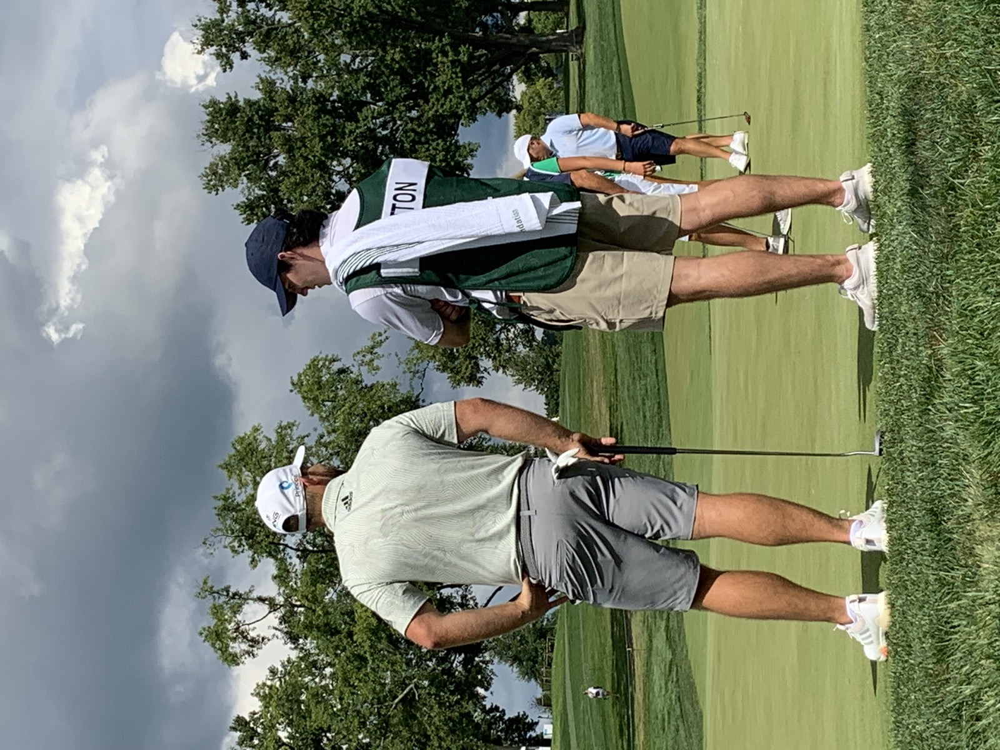
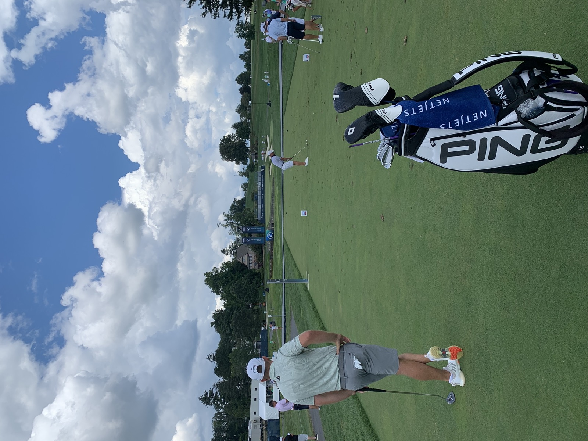

If you've ever watched Tyrrell Hatton play golf on television, you know the intensity. The fist pumps, the laser focus, the competitive fire that burns hotter than almost anyone in the professional game. Now imagine experiencing that energy from three feet away, carrying his bag.
During the BMW Championship practice round at Olympia Fields, I had the opportunity to caddie for one of Europe's most talented and fierce competitors. It was a round I'll never forget — not just for the quality of golf, but for what it taught me about the mindset required to compete at the highest level.
A Different Kind of Energy
Where Viktor Hovland carries a calm, steady presence, Tyrrell Hatton brings an entirely different energy to the course. There's an edge to his game — a visible intensity that radiates through every shot. As a caddie, you feel it. You match your pace to his rhythm, stay locked in, anticipate what he needs before he asks.
The practice round wasn't just a casual walk-through. Hatton treated every shot with purpose, studying angles, testing different approaches, and mentally cataloging the course for competition days ahead.

Between holes, there were moments of levity — a dry sense of humor that his fans might not always see on TV. But when it was time to hit, the switch flipped instantly. That ability to toggle between relaxed and razor-focused is something only the best in the world can do consistently.

Lessons From Inside the Ropes
What I took away from the experience was a deeper appreciation for the mental demands of professional golf. It's not just about hitting shots — it's about managing energy, maintaining focus over five-plus hours, and bringing your best when it matters most. Tyrrell Hatton embodies all of that.
This was another incredible opportunity made possible by the Evans Scholars Foundation and the Western Golf Association. These experiences don't just happen — they're the product of organizations that believe in the power of caddying to change lives.